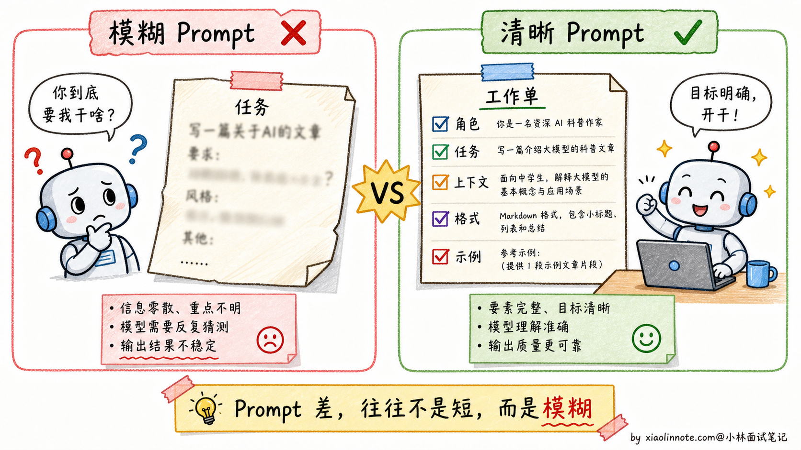
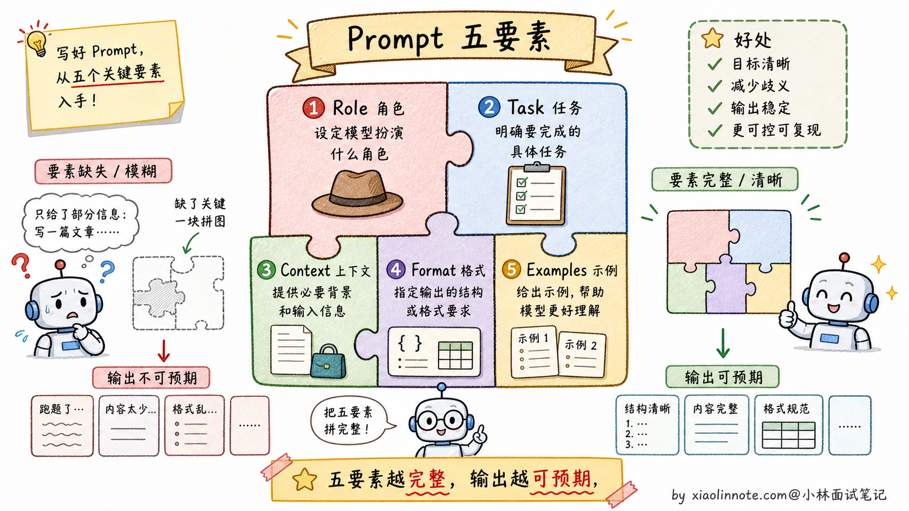
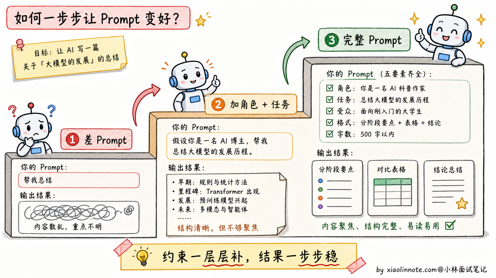
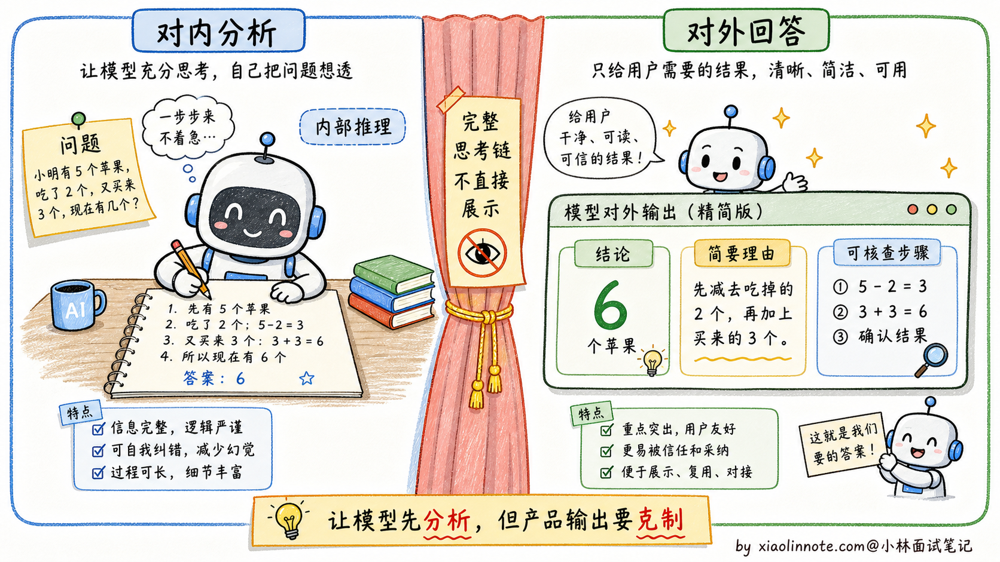
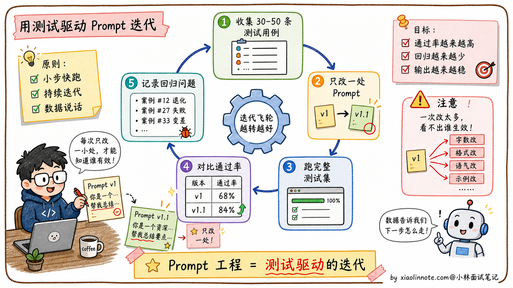
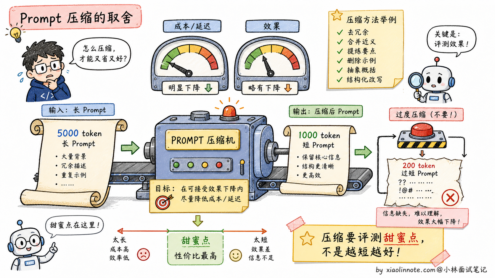

16. 如何写好 Prompt？分享下 Prompt 工程实践经验？
👔面试官：来讲讲怎么写好 Prompt？分享下 Prompt 工程的实践经验？
🙋♂️我：写 Prompt 主要就是把问题描述清楚，让模型知道我要什么。
👔面试官：……「描述清楚」是空话。具体写好 Prompt 要做哪几件事？大多数新手写 Prompt 出错，错在哪？
🙋♂️我：呃……可能是写得太短？
👔面试官：不只是太短。Prompt 写不好通常不是因为太短，而是因为「模糊」，没说清楚角色、任务、上下文、格式、示例。这五个要素你能展开讲吗？
🙋♂️我：呃，这五个我没有系统总结过。
👔面试官：典型的「会用 ChatGPT 但没真的研究过 Prompt 工程」。Prompt 不是写完就完了，是需要「测试集 + 持续迭代」的工程问题。这种「Prompt 也是工程」的认知没有，去面试就是被怼。回去搞清楚再来。
这几个反问指向的其实是同一件事，Prompt 工程不是「把人话写清楚」这种朴素动作，它有方法论：五要素、Few-shot、CoT 触发、迭代闭环，一条一条都是工程。
💡 简要回答
我在实际做项目时踩过不少坑，发现 Prompt 写不好通常不是因为太短，而是因为「模糊」，模型根本不知道你想要什么格式、什么风格、给谁看的。后来总结下来，写好 Prompt 核心就是做好五件事：给模型设定角色、说清楚任务、交代背景上下文、约定输出格式、提供示例。其中格式约束是最容易忽略、但对程序解析影响最大的。而且 Prompt 不是写完就完了，我们项目里一定要建测试集、每次改动都跑一遍，才知道改好了还是改坏了。
📝 详细解析
为什么 Prompt 的好坏能决定效果的上限
同一个模型，同一个任务，一个好 Prompt 和一个差 Prompt 输出的质量差距可以有一个数量级。这不是夸张，而是在实际项目中反复验证的结论。原因很简单：模型没有读心术，它只能根据你给它的信息来推断你想要什么。你的 Prompt 越模糊，模型的理解空间就越大，输出就越随机。
新手写 Prompt 最常见的三个问题是：指令不清晰（「帮我写一篇文章」vs「写一篇面向高中生的 800 字科普文章，解释黑洞是如何形成的」）、缺少关键上下文（模型不知道你是什么行业、你的用户是谁）、没有格式约束（模型自由发挥格式，导致下游解析出错）。这三类问题对应的是 Prompt 设计中最重要的五个要素，逐一来看。

五要素拆解
Role（角色设定） 是告诉模型「你是谁」。设定角色能让模型在回答时采用对应的知识框架和表达风格。角色越具体，模型的「人设」越稳定，输出的专业程度也越高。
❌ 差的写法：
你是一个助手，帮我分析这段代码。✅ 好的写法：
你是一位有 10 年经验的 Python 后端工程师，专注代码 Review 和性能优化，熟悉常见的安全漏洞。
回答时直接指出问题，解释原因，给出具体的修改方案。区别在哪？第一版只告诉模型它是「助手」，什么背景都没有，模型只能泛泛而谈。第二版明确了专业方向（Python 后端）、经验年限（10 年）、关注点（性能 + 安全），模型输出的深度和针对性会有明显提升。
Task（任务描述） 是告诉模型「做什么」。关键是用清晰的动词，把任务边界说明白，避免歧义。复杂任务要拆成子步骤，不要让模型一步做完所有事。
❌ 差的写法：
帮我写一篇文章。✅ 好的写法：
写一篇面向高中生的 800 字科普文章，主题是「为什么黑洞会弯曲时空」。
用日常生活类比帮助读者理解，避免数学公式，结尾给一个思考题。「帮我写一篇文章」给了模型太多自由度：写什么风格？多长？给谁看？没有约束，结果就是模型自由发挥，很可能不是你想要的。好的写法把受众、字数、主题、风格、结构都点清楚了。
Context（背景信息） 是告诉模型「你需要知道的前提」。模型不了解你的业务场景，你需要把关键背景主动塞进 Prompt。有了正确的上下文，模型的表达方式会完全不同。
❌ 差的写法：
把这段话翻译成英文。✅ 好的写法：
这是一份面向海外投资者的商业计划书摘要，需要翻译成英文。
要求：使用正式商务英语，保留所有专业术语，不要口语化，保持原文的段落结构。
[原文内容]第一版没有交代任何背景，模型不知道这段话是什么用途，翻译出来可能是很日常的英文。第二版告诉了模型受众（海外投资者）、用途（商业计划书）和具体要求，输出质量会有本质区别。
Format（输出格式） 是告诉模型「以什么形式输出」。这是很多人忽略但最影响实用性的要素，尤其是当输出要被程序解析的时候。
❌ 差的写法：
分析这条用户评论的情感。✅ 好的写法：
分析以下用户评论，以 JSON 格式输出，包含以下字段：
- "summary"：20 字以内的评论概述
- "sentiment"：正面 / 中性 / 负面 三选一
- "keywords"：最多 3 个关键词的列表
[用户评论]没有格式约束时，模型会自由发挥，可能输出一大段叙述性文字，程序根本没法解析。加上 JSON 约束之后，输出结构固定，下游处理就变得可靠。
Examples（示例） 是 Few-shot 学习，也是提升效果最明显的技巧之一。与其花很多时间描述你想要什么风格，不如直接给 1-3 个输入/输出的例子，模型会自动对齐你的期望。
对于格式复杂或风格特殊的任务，Few-shot 几乎是必备的。比如你想让模型生成特定格式的 SQL 注释，与其描述「注释要包含哪些字段、用什么符号分隔」，不如直接给一个范例，模型看懂范例比看懂一大段描述要快得多，也准确得多。

从差 Prompt 到好 Prompt：完整改造示例
光看五要素还是有点抽象，来看一个端到端的改造过程，感受一下「加一层约束，效果跳一个台阶」的规律。
场景：让模型给一篇技术博客生成摘要。
第一版（差）：
帮我总结一下这篇文章。
{文章内容}这个 Prompt 几乎没有任何约束，问题很多：没有角色（模型用什么视角总结？），没有字数限制（总结多长算总结？），没有受众定义（给普通人还是给工程师看？），没有格式要求（一段话还是分点？）。结果往往是模型随机发挥，每次输出都不稳定。
稍微改一改，加上角色和任务的描述，
第二版（加了角色 + 任务）：
你是一位技术文档编辑。
请总结以下文章，提炼核心观点。
{文章内容}有进步了，模型知道自己是「技术编辑」了，输出会更专业一些。但问题还是很多：「提炼核心观点」还是太模糊，输出多长？格式是什么？给谁看的？缺少这些约束，输出质量仍然不稳定。
再进一步，把所有要素都补全，
第三版（完整好 Prompt）：
你是一位技术内容编辑，负责为工程师受众提炼文章精华。
## 任务
对以下技术博客进行摘要提炼。
## 要求
- 摘要总长度：100-150 字
- 受众：有 2-3 年经验的后端工程师，熟悉基础概念，不需要解释入门知识
- 输出格式：
- **一句话结论**：20 字以内，直接说文章最核心的观点
- **要点列表**：3 条，每条不超过 30 字
- **适合人群**：一句话说明哪类读者最该看这篇文章
## 文章内容
{文章内容}这一版把五个要素都补全了：角色（技术内容编辑）、任务（摘要提炼）、背景（后端工程师受众）、格式（三段式固定结构）、长度约束（100-150 字）。交给不同模型、在不同时间执行，输出格式和质量都会高度稳定。这就是好 Prompt 的核心价值，可预期、可复用、可迭代。

进阶技巧
掌握了五要素之后，还有几个进阶技巧能进一步提升 Prompt 的可靠性和推理质量。
CoT 触发词 是让模型先组织推理再回答的简单方式。在 Prompt 末尾加上「请先分步分析，再给出结论」这类指令，往往能提升涉及逻辑推理和计算的任务准确率。
不过 2026 年的工程实践里，不建议默认把完整推理链原样展示给最终用户。一方面会多花 token，另一方面完整思考链里可能有不稳定或不该暴露的内容。更稳的做法是：让模型内部先分析，最终只输出简洁的依据、关键步骤或可核查的结论。
XML 标签包裹内容 是 Claude 特别推荐的做法。当 Prompt 中包含多个部分时，用 XML 标签明确区分，模型理解起来更准确。比如：
<document>
{这里是要分析的文档内容}
</document>
<task>
根据上面的文档，提取所有提到的日期和对应事件，以表格形式输出。
</task>先思考后回答 的结构对需要多步推理的任务效果很好。内部链路里可以让模型先分析，再把最终答案单独放出来；对外展示时，建议输出「简要理由」或「检查清单」，而不是完整的 hidden reasoning。掌握了这些结构技巧，还有一件事同样重要：Prompt 不是写完就完，需要持续迭代。

迭代方法论
Prompt 工程本质上是一个「提出假设 -> 测试 -> 优化」的循环，不是一次写完就完事的。
实践中我们的做法是：先整理 30-50 条有代表性的测试用例，覆盖正常情况和边缘情况；每次改 Prompt，在整个测试集上跑一遍，看通过率的变化；如果改动让某些用例变好了但另一些变差了，就继续拆分，针对不同类型的输入写不同的 Prompt 分支。
改 Prompt 要遵循「每次只改一处」的原则，这样才能判断是哪个改动起了作用，避免互相干扰。

进阶：Prompt 压缩
写好 Prompt 之后，还有一个工程优化点容易被忽略：Prompt 压缩。
为什么需要压缩 Prompt？两个原因。第一，长 Prompt 贵，token 费用直接和长度成正比。第二，长 Prompt 慢，每多 1000 token，首 token 延迟可能多几十 ms，影响用户体验。
但你写好的 Prompt 里其实有大量「冗余信息」。比如「请你认真仔细地一步一步分析这个问题」其实可以压成「认真分步分析」；20 个 Few-shot 示例里很多重复的模式可以挑代表性的几个就够；System Prompt 里反复强调「不要做 X」的句子也是浪费 token。
主流的 Prompt 压缩方案有两类：
1. LLMLingua（微软提出）
用一个小模型（比如 LLaMA 7B）评估 Prompt 中每个 token 的「信息含量」，删掉信息量低的 token。原 Prompt 5000 token 压到 1000 token，效果损失只有 1-3%。这是当前最主流的工程方案，HuggingFace 上有现成的实现。
2. Embedding 表示
把整段 Prompt（特别是 Few-shot 部分）编码成一个固定长度的 embedding 向量，让模型直接读 embedding 而不是 token 序列。这种方案需要模型支持「软 Prompt」（Soft Prompt）输入，目前还在研究阶段，没普及。
实际工程里 Prompt 压缩适合两类场景。一类是长上下文 RAG，检索到的文档内容很长，压一压能省大量 token 成本。另一类是大量 Few-shot 示例，示例池有 50+ 个时，压缩对延迟改善特别明显。
需要注意的是，压缩对效果有损失。压得越狠损失越大，工程上要在「省钱省时间」和「效果衰减」之间找平衡点。建议在自己的测试集上评测，找到「压到多少 token 效果还能接受」的甜蜜点。

🎯 面试总结
回到开头那段对话，问到怎么写好 Prompt，最重要的是先把新手最容易踩的雷讲出来：Prompt 写不好通常不是因为太短，而是因为「模糊」，没说清楚角色、任务、上下文、格式、示例。这一句先点出来，面试官就知道你抓到了核心问题。
接下来讲五要素拆解：Role（角色设定，让模型有专业人设）、Task（任务描述，用清晰动词把任务边界说明白）、Context（背景信息，把业务场景塞给模型）、Format（输出格式，特别是要程序解析的场景必须强约束）、Examples（Few-shot 示例，比纯文字描述效果好得多）。能把这五要素逐个讲清楚 + 给具体例子，比单纯说「Prompt 要写清楚」深刻得多。
然后讲进阶技巧：CoT 触发词能帮助模型先组织推理，但最终用户侧最好只展示简要依据；XML 标签包裹内容（特别是 Claude 推荐）让模型理解结构更准；「先分析后回答」的结构对多步推理有效。这些技巧能在面试里点一两个出来，会让面试官觉得你真的写过项目级 Prompt。
最关键的是讲Prompt 是工程问题，不是一次写完就完事的。要建测试集（30-50 条覆盖正常和边缘情况）、每次改动都跑一遍看通过率、遵循「每次只改一处」原则避免多变量干扰。这种工程化视角是面试拉差距的地方。
如果还想再加分，可以提一句 Prompt 压缩（LLMLingua 用小模型评估 token 重要性删冗余、Embedding 表示压缩 Few-shot）作为长 Prompt 场景的进阶优化，让面试官知道你跟得上 Prompt 工程的最新实践。能讲到这一层，已经是面试里很难追问的水平了。
对了，大模型面试题会在「公众号@小林面试笔记题」持续更新，林友们赶紧关注起来，别错过最新干货哦！